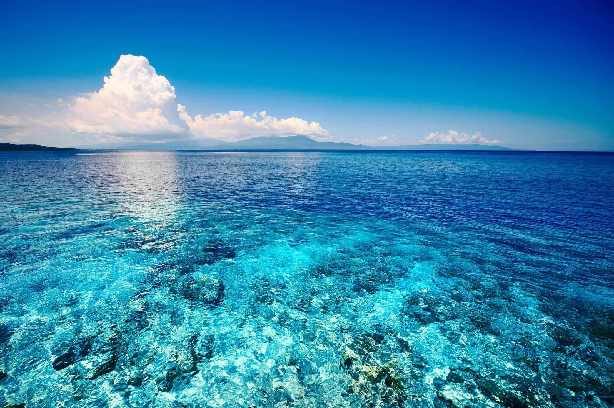
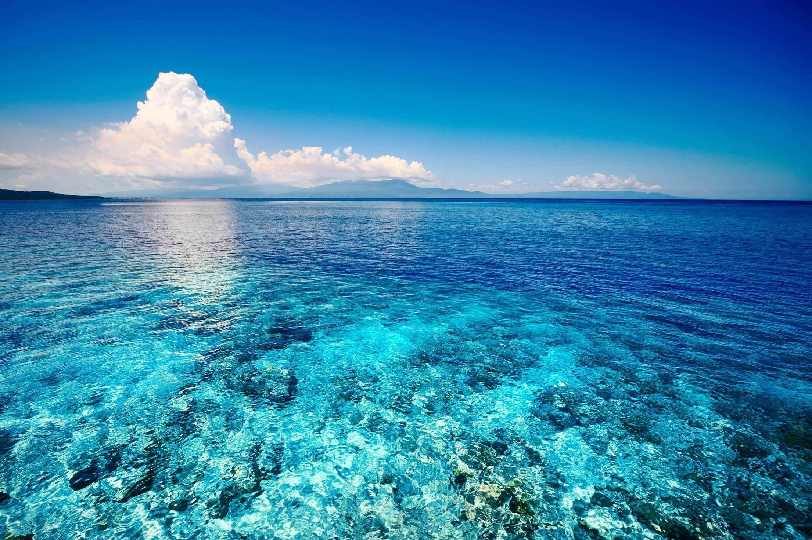

Греция — государство в юго-восточной Европе, занимающее юг Балканского полуострова. Она омывается Средиземным морем, в том числе: Ионическим, Эгейским морями, а южное побережье Крита — Ливийским морем. Соседями Греции являются Болгария, Македония и Албания, с Турцией имеет как сухопутную, так и морскую границу..

Одна из крупнейших областей на юго-востоке Средней Греции. Имела форму треугольника, основание которого примыкало к Беотии, а две стороны омывались морем с востока и запада. Среди горных хребтов расположены равнины: Элевсинская, Кекропская и Марафонская. Реки Аттики – Кефис Асоп, Иллис – небольшие и мелководные, некоторые летом совершенно пересыхали. Земля Аттики поддавалась обработке только на равнинах. Однако земледельцы добивались высоких урожаев оливок, винограда, фиг. В горах было много известняка и мрамора, пригодных для строительства. Аттика обладала большими запасами поваренной соли. В Лаврионе добывали серебро, железную руду и глину, что способствовало раннему развитию ремесел и торговли. Населяли Аттику ионийцы, они считали себя не пришельцами, как дорийцы, а исконными жителями этих мест. По преданию, объединять область под властью Афин начал сын царя Эгея Тесей после того, как освободил Афины от дани Криту. Во времена архаики и позже Аттика постепенно становилась одним из наиболее развитых районов Греции. Крупными центрами Аттики, помимо Афин, были Элевсин и Пирей.

Полуостров в южной части Балканского полуострова, соединяющийся с ним Коринфским перешейком. Окружён тремя заливами – Лаконским, Мессенским и Арголидским. На его территории находились Ахайя, Элида, Лаконида с Мессенией, Арголида, Коринфия, Сикиония и Аркадия. В древнейшие времена Пелопоннес был заселён пеласгами, которых оттеснили ахейцы, заняв во II тыс. до н.э. Арголиду и Мессению. В свою очередь, заселявшие с XII в. до н.э. полуостров дорийцы подчинили своему влиянию ахейские общины. Одним из наиболее сильных государств на Пелопоннесе была Спарта (Лакедемон), возглавившая Пелопоннесский союз.

полуостров на юго-востоке Европы, омываемый Адриатическим, Ионическим, Мраморным, Критским, Эгейским и Чёрным морями и включающий европейскую часть Турции, Грецию, Албанию, Болгарию, Боснию и Герцеговину, Северную Македонию, Черногорию, и частично, Румынию, Сербию, Словению и Хорватию